Hyperbolic functions
Certain combination of the exponential functions ex and e−x arise so frequently in mathematics and its applications that they deserve to be given special names. These are the hyperbolic functions, defined as follows
Hyperbolic sine
Hyperbolic cosine
Hyperbolic tangent
Note that sinh has domain ℝ and range ℝ, while cosh has domain ℝ and range [1, ∞]. From the definitions the following properties follow:
Sh (−x) = − Sh (x) (odd function);
Ch (−x) = Ch (−x) (even function);
Th (−x) = −Th (x) (odd function);
The variable The reason for the names of these functions is that they are related to the hyperbola in much the same way that trigonometric functions are related to the circle; A point on the circle x2 + y2 = a2 may be expressed parametrically as x = a cos θ, y = a sin θ, whereas a point on one branch of the rectangular hyperbola x2 − y2 = a2 may be represented by x = a cosh φ, y = a sinh φ, satisfying the equation x2 − y2 = a2. The most famous application is the use of hyperbolic cosine to describe the shape of a hanging wire (such as a telephone or power line). Galilei thought the chain curve was a parabola.

But later it was proved that it takes the shape of a curve with equation called a catenary. (The Latin word catena means “chain.”). In which x0 represent the value for which the catenary has either a minimum or maximum, h is the value of the catenary at x0; The paramter a also characterizes the form of the catenary: for a > 0 it is a sagging chain, for a < 0 it is an arch. The actual value for a depends on the tension in the cable and the density of the cable.